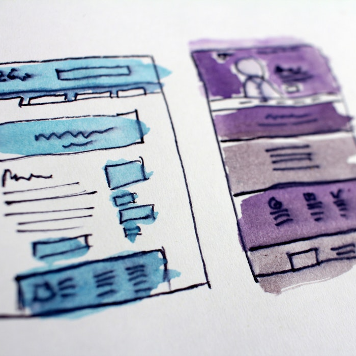

Sylvain Wehbe
Le Wagon - Batch #223 - Berlin, Germany
Investing in ourselves by continuously improving our skills
is extremely valuable and makes our life even more pleasant
My Favorite Trainings
 |
Ruby is a Back-End Programming Language designed and developed in the mid-1990s by Yukihiro "Matz" Matsumoto in Japan |
| Object-Oriented programming is a programming paradigm based on the concept of "objects", which may contain data, in the form of fields, often known as attributes and code, in the form of procedures, often known as methods | |
| A DataBase is an organized collection of data, generally stored and accessed electronically from a computer system. Where databases are more complex they are often developed using formal design and modeling techniques | |
|  | Front-End web development is the practice of converting data to graphical interface for user to view and interact with data through digital interaction using HTML, CSS and JavaScript |
| Ruby on Rails (or Rails) is a server-side web application framework written in Ruby under the MIT License. Rails is a model–view–controller framework, providing default structures for a database, a web service, and web pages |